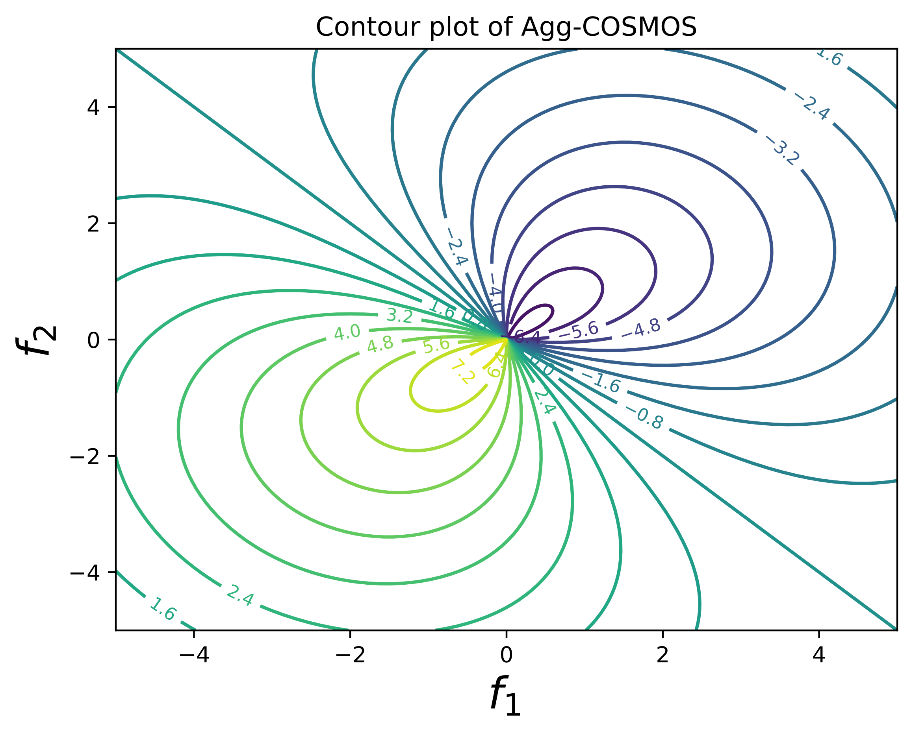
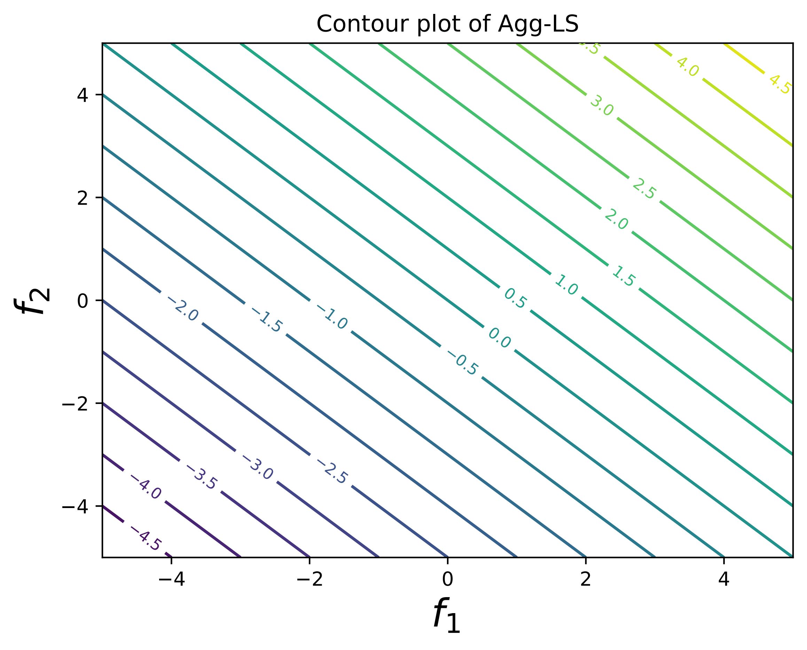
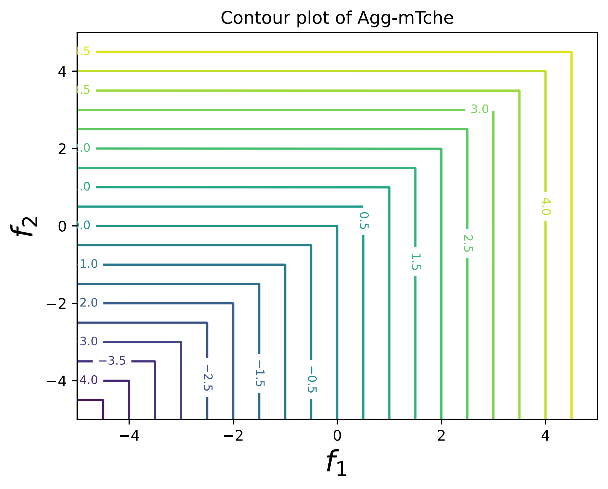
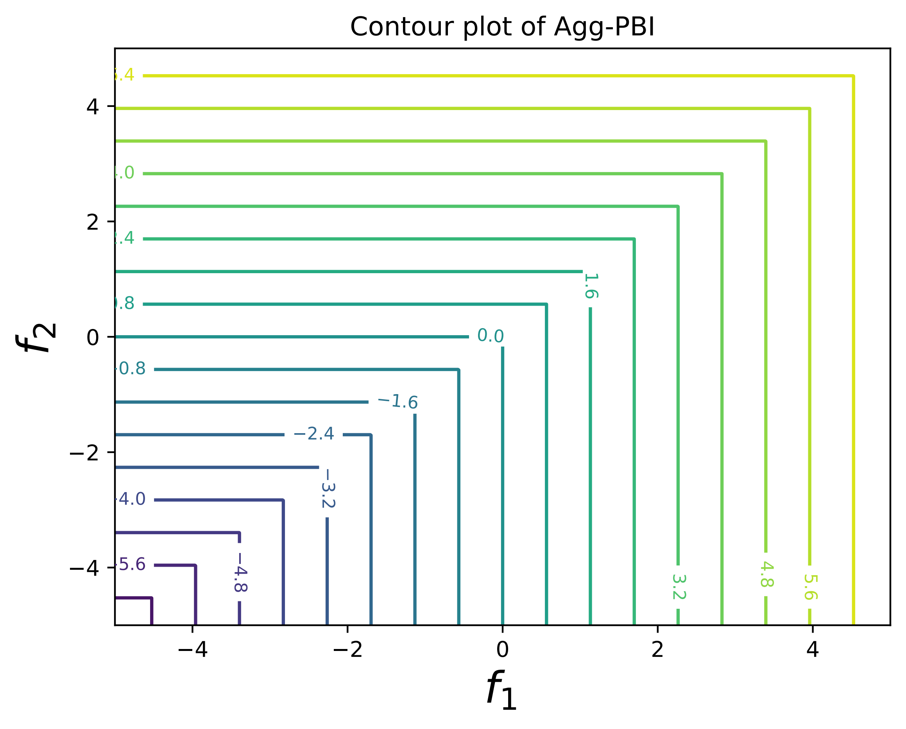
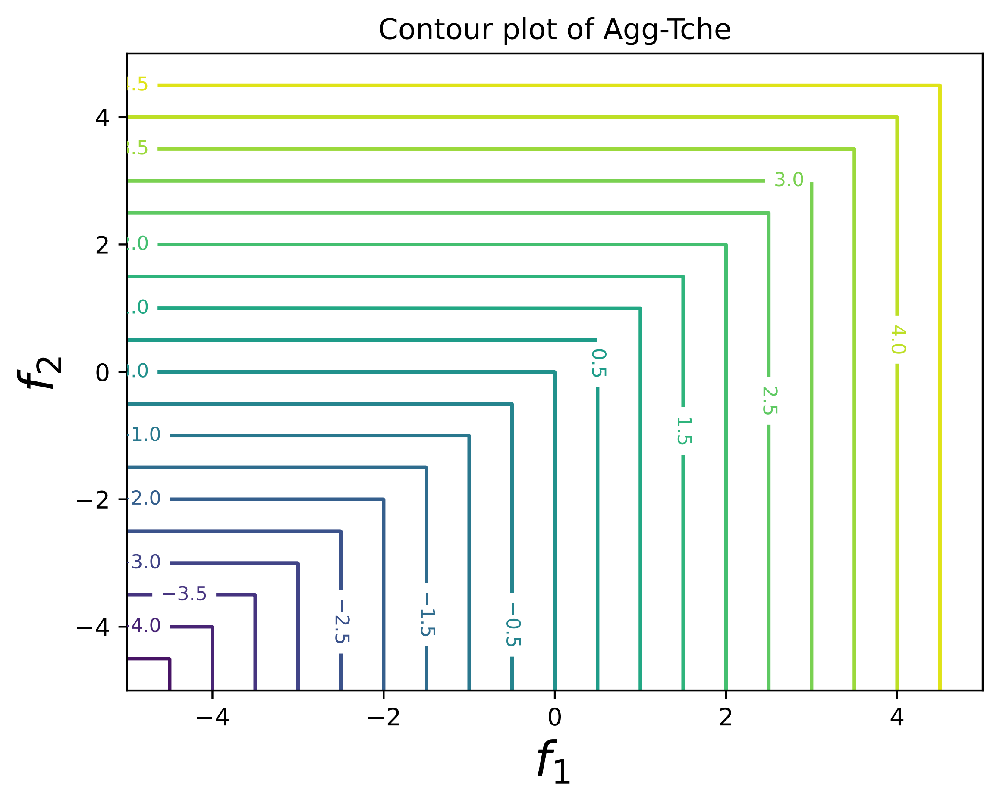

LibMOON
GETTING STARTED:
Installation
Introduction
Quick Start
USER GUIDE:
What is Multi-Objective Optimization?
Overall Framework
Run a Benchmark
DEVELOPER GUIDE:
Apply to a New Dataset
Apply to a New Method
Adding a New Architecture
API REFERENCE:
libmoon.problem
libmoon.metric
libmoon.solver
GALLERY:
Contor of aggregation functions
LibMOON
Contor of aggregation functions
View page source
Contor of aggregation functions




